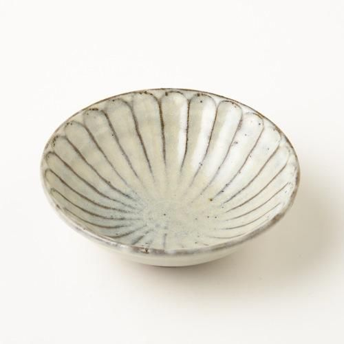
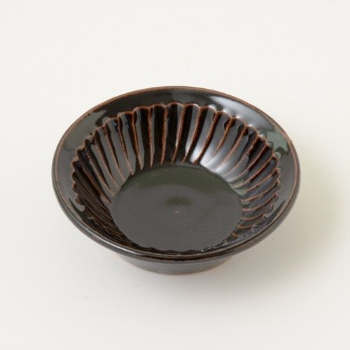

otonarisan
丹波焼・丹波立杭焼/Tanbayakiware
This pottery is fired near the Imada area of Tanba-Sasayama City, Hyogo Prefecture, and is known for its brown clay surface and rustic texture.
Although it is rugged, it fits comfortably in your hand and gives you a natural warmth.


歴史/History
Its origin is said to be from the end of the Heian period to the beginning of the Kamakura period.
Tamba ware can be roughly divided into the Anagama period and the Noborigama period, and the Anagama was used for 400 years until the end of the Momoyama period, but from the early Edo period onwards, the Korean-style half-fired kiln, which is still used today, was used. It replaced the above-ground "nobori kiln".